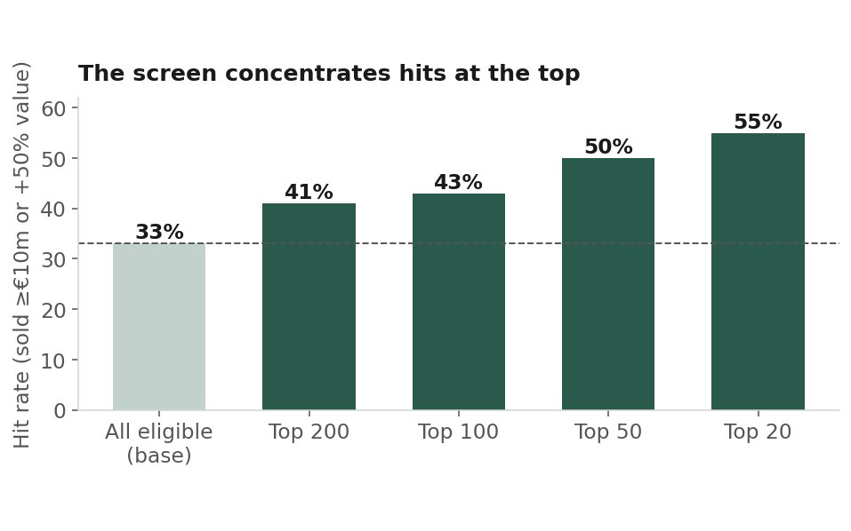
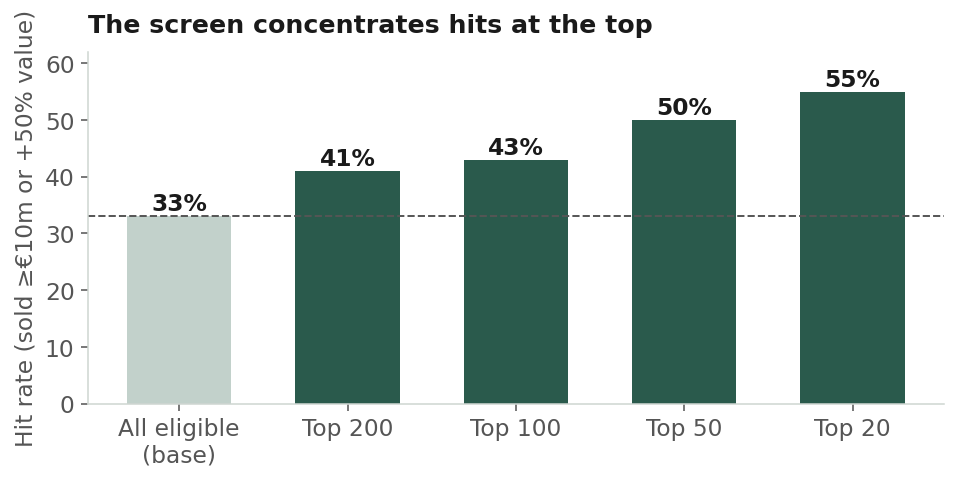
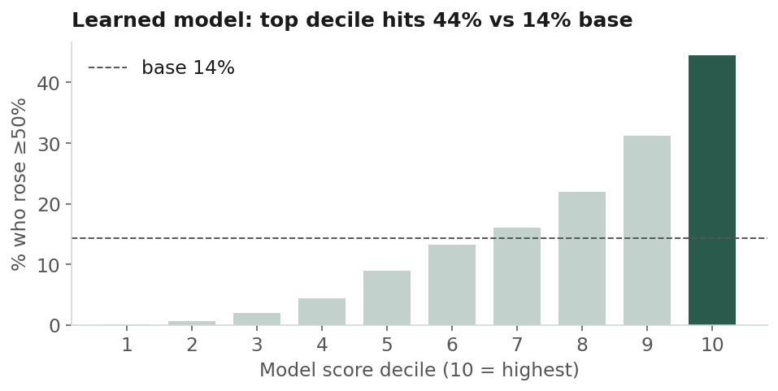
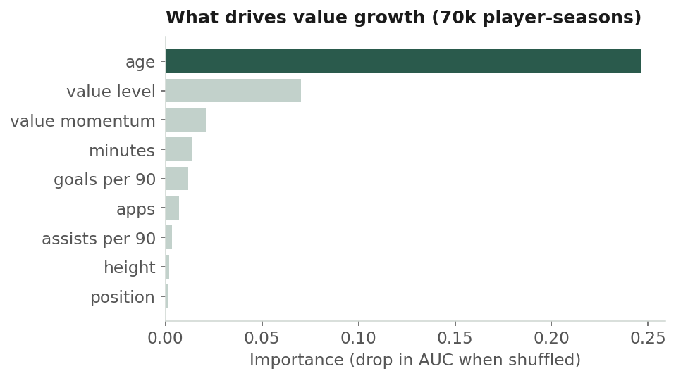
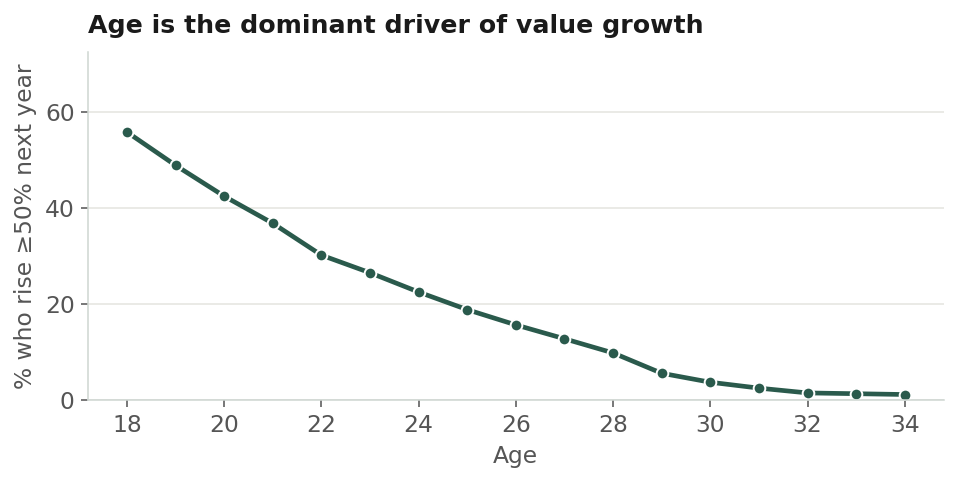

Can open data spot the next €30 million player before the market does?
Using only free FBref and Transfermarkt data, I built a screen for undervalued young players across Europe's top leagues, then back-tested whether its picks actually paid off. They did. A model trained on 70,000 player-seasons then showed why.
- A transparent screen across the ten strongest leagues, built only from free FBref and Transfermarkt data.
- Young players are scored on performance, intensity, misprofiling and underuse, always within their position.
- In a point-in-time back-test the top 20 hit 55% against a 33% base rate; a learned model reaches ROC-AUC 0.81.

Every summer, clubs spend billions chasing the same insight: which cheap young player is about to become expensive. The received wisdom is that you need scouts, contacts and proprietary tracking data. This project asked a smaller question — how far can you get with data anyone can download?
The answer: further than you'd think, with important caveats. A transparent screen built from open data ranked its top-20 players at a 55% "hit" rate against a 33% base — and a learned model across fourteen seasons pushed that to a 3× lift, while quietly confirming what football economists have argued for years about what actually drives a player's price.
The setup: open data, ten leagues, one question
The pool is the ten strongest leagues by Opta's Power Rankings — the traditional Big Five plus the Championship, Primeira Liga, Eredivisie, and the Brazilian and Argentine top flights. Performance data comes from FBref (StatsBomb-powered per-90 metrics for roughly 6,700 players); market values, ages, positions and transfer histories from a Transfermarkt-derived dataset.
The brief: find players who are young, cheap, playing meaningful-but-not-nailed-on minutes, and whose numbers suggest more than their price tag — including players who look mis-labelled by position. Every ingredient is grounded in the scouting and player-valuation literature: role-based profiling (Bergkamp et al., 2022), and the econometric determinants of transfer value (Poli, Besson & Ravenel, 2022; Franceschi et al., 2023).
The screen: four signals, one score
Each player gets four scores, always compared within their position so a full-back is never measured against a striker:
- Performance — attacking output and creation per 90 (shots, key passes, shot- and goal-creating actions).
- Intensity — pressing, tackling, carrying and recovery volume: an open-data proxy for "can handle a high-tempo game," since real GPS data is proprietary.
- Misprofiling — a model that flags players whose statistical fingerprint matches a different role than the one they are listed in.
- Underused — strong per-90 output on a low share of team minutes: the classic under-priced profile.
Does it actually work?
A screen is only worth anything if its picks come true. So I ran a strict point-in-time back-test: freeze everything we'd have known in June 2025, rank the players, then check what happened over the following year. A "hit" is a player who was either sold for a real fee (≥€10m) or whose market value rose by at least 50%.

Crucially, the names hold up. The screen's high-scoring calls that paid off include real breakouts and real sales:
| Player | Club (24/25) | Pos, age | Fee | Value + |
|---|---|---|---|---|
| Abdoul Ouattara | Strasbourg | RB, 18 | — | +1150% |
| Rodrigo Zalazar | SC Braga | MF, 24 | €30m | +67% |
| Enzo Le Fée | Sunderland | MF, 24 | €24m | +56% |
| Lazar Samardžić | Atalanta | MF, 23 | €17m | — |
| Can Uzun | Frankfurt | AM, 19 | — | +150% |
| Nico O'Reilly | Man City | FB, 19 | — | +289% |
| Samuel Dahl | Benfica | LB, 21 | €9m | +86% |
| Iván Fresneda | Sporting CP | RB, 19 | — | +88% |
A sample of high-ranked 2024/25 players and what happened next. Value change is Transfermarkt market value to mid-2026.
Going deeper: what drives a value rise?
The screen uses hand-picked weights. To ask the data directly, I built a second model — a gradient-boosting classifier trained on ~70,000 player-seasons from 2012–2025, predicting whether a player's value would jump ≥50% the following year, using only what was known at the time. Tested out-of-time on the most recent seasons, it scored a ROC-AUC of 0.81, with its top-decile picks rising at 44% against a 14% base.


That first bar is the whole story of football's transfer market in one image. Age is destiny. Value level comes next — cheaper players have more room to grow in percentage terms — then momentum, minutes and goals. It's a striking, if slightly deflating, confirmation of the economics literature: youth is the single biggest lever on a player's price trajectory.

The honest limitations
This is a real edge, not a crystal ball, and it's worth being precise about why:
- Age does much of the work. Because "rise" is measured in percentages, young players have a mechanical advantage. The genuinely useful scouting question — which players rise beyond what their age predicts — is the harder one, and needs richer inputs.
- The multi-season model uses basic stats only. Goals, assists and minutes are in the historical data; xG, progression and defensive volume are not. Whether advanced metrics predict value on top of age is the natural next study, and needs a multi-season FBref pull.
- Market value is a crowd estimate, not ground truth, and it has momentum — so some of the model's skill is simply "the market keeps re-rating players it is already re-rating."
- Coverage gaps. The Championship and Argentina are missing from the value dataset, and name-matching across sources resolves about 77% of players.
The top of the board
Here are the ten highest-scoring players the model can fully profile for 2025/26 — the sharp end of the top score decile, the group that (per the back-test) hits at roughly three times the base rate. The final column is why each one surfaced: the signals doing the lifting.
| Player | Club | Value | Score | Why the model likes him | |
|---|---|---|---|---|---|
| Héctor FortRight-Back · 18 | ElcheESP · La Liga | €12m | 0.67 | elite attacking output vs positional peers; strong per-90 output on limited minutes | |
| Sidny Lopes CabralLeft-Back · 22 | EstrelaPOR · Primeira Liga | €4m | 0.58 | elite attacking output vs positional peers | |
| Kian Fitz-JimCentral Midfield · 22 | AjaxNED · Eredivisie | €3m | 0.57 | plays like a more advanced role than his label; high pressing, carrying & recovery volume | |
| Zachary AthekameRight-Back · 20 | MilanITA · Serie A | €15m | 0.57 | elite attacking output vs positional peers; plays like a more advanced role than his label | |
| AdrielGoalkeeper · 24 | AVS FutebolPOR · Primeira Liga | €1m | 0.56 | elite attacking output vs positional peers; plays like a more advanced role than his label | |
| Rayane BounidaAttacking Midfield · 19 | AjaxNED · Eredivisie | €5m | 0.55 | elite attacking output vs positional peers; plays like a more advanced role than his label | |
| Riyad IdrissiLeft-Back · 20 | CagliariITA · Serie A | €4m | 0.54 | elite attacking output vs positional peers; high pressing, carrying & recovery volume | |
| Sem SteijnAttacking Midfield · 23 | FeyenoordNED · Eredivisie | €11m | 0.54 | elite attacking output vs positional peers; plays like a more advanced role than his label | |
| MaikRight-Back · 20 | São PauloBRA · Serie A | €2m | 0.54 | elite attacking output vs positional peers; strong per-90 output on limited minutes | |
| Simon JanssenLeft-Back · 24 | ExcelsiorNED · Eredivisie | €0m | 0.54 | elite attacking output vs positional peers; strong per-90 output on limited minutes |
Score is the composite screen (performance, intensity, misprofiling, underused), normalised within position. Table limited to players with full Transfermarkt profiles; several top-decile Championship names are omitted as that league is absent from the value dataset.
Ones to watch for 2026/27
Picked in September 2026, using the latest full season of data and the market values at the time.
So who does it like now? Running the screen over the current season and filtering for the young-and-still-cheap profile, three names stand out — chosen for a spread of position, league and risk. These are the model’s calls, not certainties: think of them as where to point a scout’s eye first.
Héctor Fort
The confident pickThe screen’s number one, and the profile is textbook. A Barcelona-schooled attacking full-back posting an elite output score while playing only a fraction of his side’s minutes — the classic “producing above his role” signature. Full-backs who create at 18 re-rate faster than almost any profile in football, and €12m leaves plenty of headroom.
Rayane Bounida
The value playPriced like a prospect, performing like a producer. One of the most-talked-about talents in the Ajax academy, with a profile that spans creator and second-striker roles — the positional flexibility that tends to lift value. Ajax’s well-worn pathway to big sales makes the “pop” mechanism concrete. The cheapest of the three and the highest ceiling.
Keny Arroyo
The high-upside flyerThe market-inefficiency bet. An 18-year-old winger thriving in Brazil is textbook arbitrage — South American wide players routinely see their value multiply on the move to Europe. Higher variance than the other two, but he sits on the cheap side of a transfer market that systematically under-prices talent before it crosses the Atlantic.
Ranked by the open-data screen, which the back-test showed carries a real edge (1.66× at the top) — not a guarantee. Profiles are built from output plus the screen’s signal scores; richer radars follow once advanced 2025/26 data is added.
Free data plus transparent methods gets you a screen that beats the base rate meaningfully and a determinants model that is honest about its own limits. It won't replace a scouting department — but as a first filter over 6,700 players, it points the eye at the right names, and it can tell you why.
Methods & references
Performance data: FBref advanced per-90 stats, 2024/25, nine of the ten target leagues, collected via a browser session. Value, position and age: a Transfermarkt-derived Kaggle dataset (davidcariboo/player-scores). Players are resolved across sources by name plus season-accurate club (~77% matched). The screen standardises every metric within positional peer groups. The determinants model is a HistGradientBoostingClassifier; identity and outcome windows are strictly separated in time to prevent leakage. All figures are generated directly from the underlying data.
- Bergkamp et al. (2022). How soccer scouts identify talented players. European Journal of Sport Science. doi:10.1080/17461391.2021.1916081
- Poli, Besson & Ravenel (2022). Econometric approach to assessing the transfer fees and values of professional football players. Economies. doi:10.3390/economies10010004
- Franceschi, Brocard, Follert & Gouguet (2023). Determinants of football players' valuation: a systematic review. Journal of Economic Surveys. doi:10.1111/joes.12552